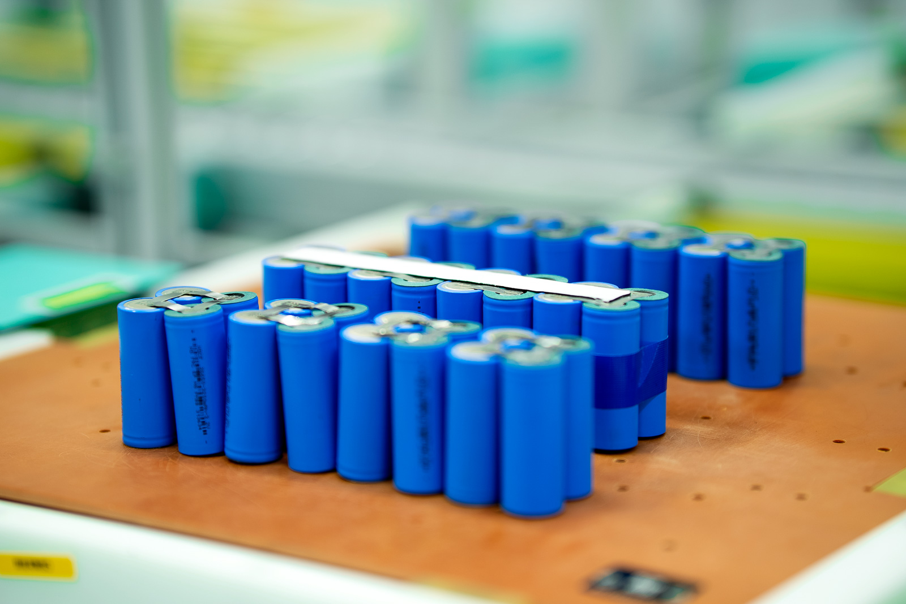
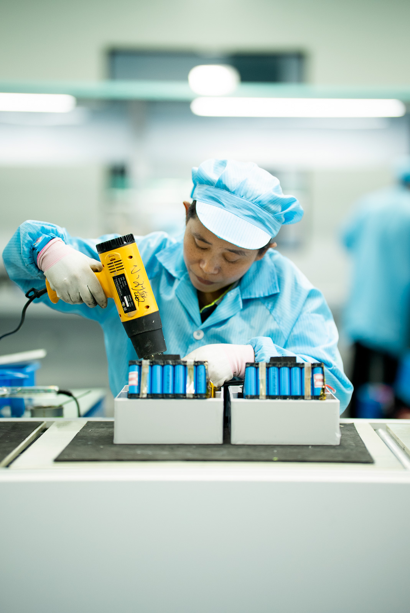
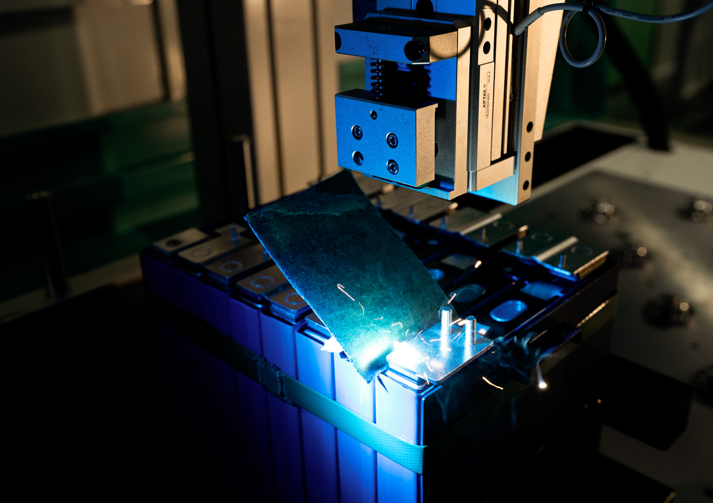
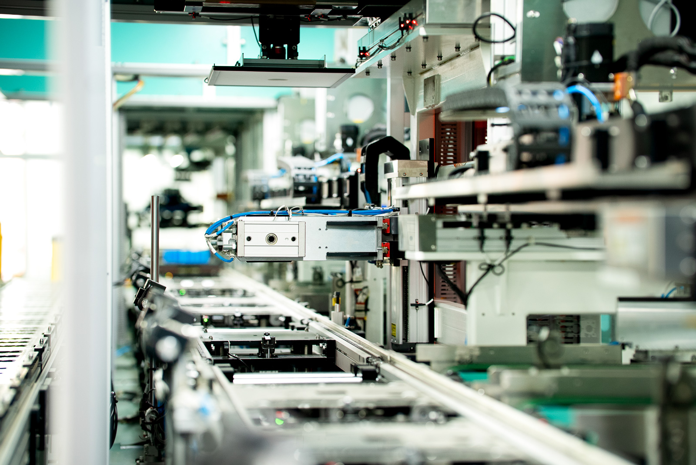
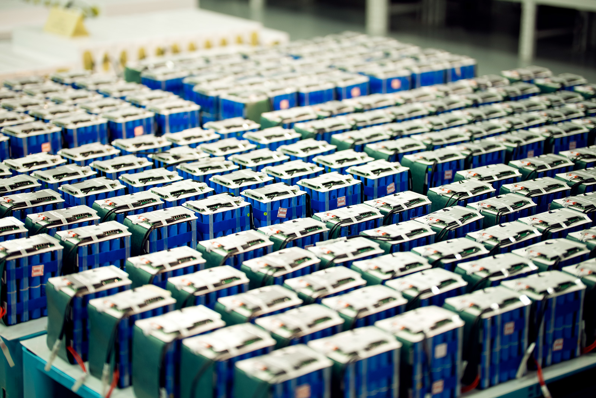

Back to battery packs
Battery pack
Heavy machinery chassis.
A battery that is part of the machine's structure: a folded plate chassis carrying the service disconnect, the relays, the busbars and the BMS master on their own layer inside it.
Discuss this pack
Scroll
- Build
- Bend-plate chassisFolded from plate and bolted through flanges, so the battery carries load instead of hanging off a bracket.
- Assembly
- 356 partsDrawn from the production CAD, every part modelled.
- Isolation
- Service disconnectA manual disconnect breaks the string before the pack is opened.
The pack, up close.
Cells, assembly and test, from the production floor.




